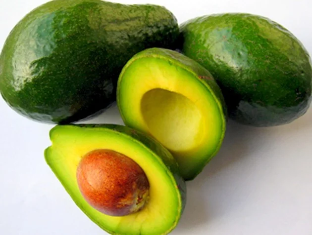
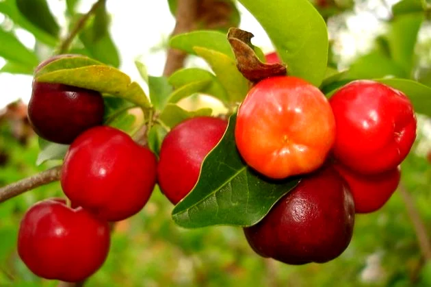
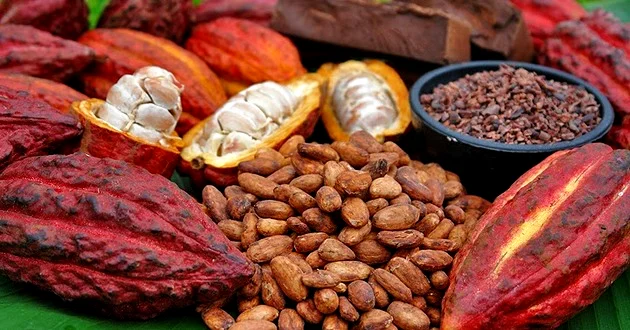

Abacate
Originário da América Central, o abacate possui vitaminas A, B, C, D, E, proteínas, cálcio, magnésio, fósforo, ferro e potássio. O Brasil é, provavelmente, o único lugar do mundo que o consome como sobremesa, utilizando açúcar e leite. Em outros países, é usado como um alimento temperado com sal e azeite.
Abacaxi

Encontrado originalmente em toda a América do Sul tropical, o abacaxi é rico em vitamina C e contribui para o funcionamento do sistema imunológico. Também auxilia na perda de peso e alívio das dores musculares.
Acerola
Originária da América Central, a acerola é fonte de vitamina C e auxilia no combate a doenças respiratórias. É consumida natural ou ainda como suco, doces, geleias e sorvetes.
Cacau
De origem brasileira, da região Amazônica, o cacau é a matéria-prima do chocolate. Essa fruta é rica em fibras e minerais, como ferro, fósforo e cálcio. Também pode ser consumida como suco.